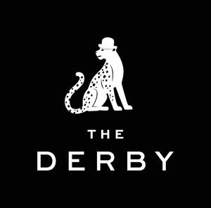

Trade Mark Journal No.2025/035 29 August 2025
UK00004214870 6 June 2025 (35,37,43,45)
Mark 1
Mark 2

- Class 35
- Hotels (Business management of -).
- Class 37
- Cleaning of hotels.
- Class 43
- Reservation of hotel accommodation; Booking of hotel accommodation; Booking of hotel rooms for travellers; Hotel reservations; Hotel restaurant services; Hotel room booking services; Resort hotel services; Hotel services; Hotel accommodation services; Hotel accommodation reservation services; Hotel reservation services; Appraisal of hotel accommodation; Arranging of hotel accommodation; Arranging hotel accommodation; Providing hotel and motel services; Providing hotel accommodation; Hotel information; Reservation of accommodation in hotels; Provision of hotel accommodation; Resort hotels; Booking agency services for hotel accommodation; Agency services for booking hotel accommodation; Providing room reservation and hotel reservation services; Pet hotel services; Hotels and motels; Booking of campground accommodation; Providing accommodation in hotels and motels; Hotels, hostels and boarding houses, holiday and tourist accommodation; Reservation of rooms for travellers; Guesthouse; Booking services for hotels; Rental of towels for hotels; Rental of curtains for hotels; Rental of conference rooms; Rental of rooms; Room booking; Booking of restaurant seats; Motel services; Rental of furniture for hotels; Hotel services for preferred customers; Restaurant reservation services; Restaurant services provided by hotels; Resort lodging services; Hotel reservation services provided via the Internet; Tourist agency services for booking accommodation; Room reservation services; Reservation services for the booking of accommodation; Making hotel reservations for others; Accommodation reservations; Providing exhibition facilities in hotels; Consultancy services relating to hotel facilities; Rental of rooms as temporary living accommodations; Reservation and booking services for restaurants and meals; Accommodation reservation services; Reservation services for accommodation; Reservation of restaurants; Booking services for accommodation; Booking agency services for holiday accommodation; Tourist camp services [accommodation]; Arranging of meals in hotels; Holiday lodgings; Rating holiday accommodation; Rental of holiday accommodation; Booking of temporary accommodation; Travel agency services for booking restaurants; Reservation of temporary accommodation; Hospitality services [accommodation]; Agency services for reservation of restaurants; Travel agency services for booking temporary accommodation; Reservation services for booking meals; Services for reserving holiday accommodation; Agency services for the reservation of temporary accommodation.
- Class 45
- Hotel concierge services.
Dominus Monument Hotel Limited